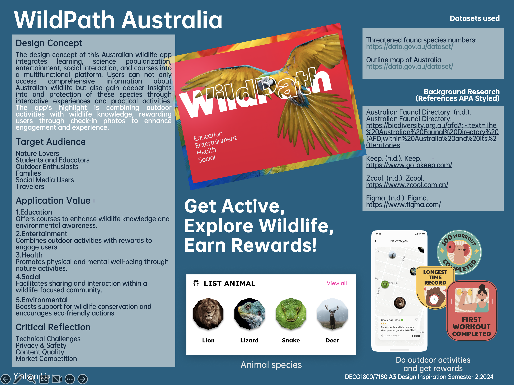

Overview
Part A introduces the formation of the poster, my sources of inspiration, information gathering, and how to create the poster. Along the way, I encountered challenges in finding inspiration and understanding design concepts, but eventually overcame these challenges.
Idea Development
In Class: Group communication and brainstorming.


Individual:
Poster
Critical Reflection
Technical Implementation Challenges:
Integrating various functions into a single app may pose technical challenges, requiring a smooth and
stable user experience.
User Privacy and Safety:
Special attention is needed to protect user privacy and safety, especially concerning outdoor check-ins
and photo features to avoid potential dangers.
Content Quality and Updates:
Ensuring the accuracy and timeliness of information, especially news and course content related to
wildlife, with a professional team for ongoing updates and maintenance.
Market Competition:
Identifying a unique positioning and competitive advantage in the existing market of nature and outdoor
sports apps to attract and retain users.
User Incentive Mechanism:
Designing a reasonable incentive system that attracts participation while avoiding excessive
commercialization and negative impacts on the natural environment.
This app has significant potential in education and entertainment but also faces many challenges. With careful design and continuous optimization, it is expected to provide a valuable and engaging learning and social platform for users.